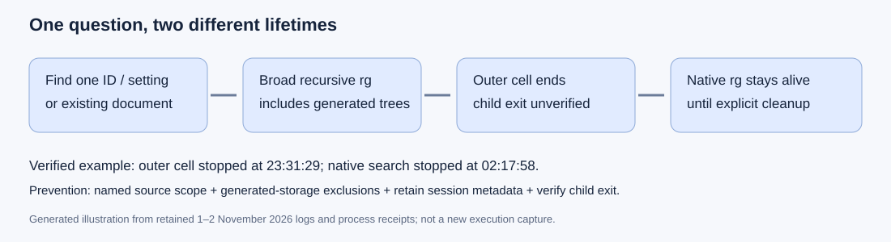

Eight Codex-launched ripgrep context-discovery searches across six chats were scoped too broadly. Six completed orchestration cells printed only r.output, hiding command status/session metadata; another outer cell was explicitly terminated without stopping its native search. The owning chats moved on while searches remained alive.

Generated illustration from saved evidence, not a new process capture. Times are Europe/London (GMT).
| PID | Context lookup | Native start | Approximate lifetime |
|---|---|---|---|
| 27812 | SpaceSleuth name/context lookup while preparing a remote disk investigation | 2026-11-01 23:31:16 | 166.7 min |
| 23076 | Light Will Win video-ID/title/schedule lookup in release, report and blog locations | 2026-11-02 00:17:54 | 115.5 min |
| 42108 | Second, broader Light Will Win video-ID lookup across My Songs | 2026-11-02 00:18:14 | 115.4 min |
| 19424 | FFmpeg/ffprobe CI configuration lookup across repositories and Tools | 2026-11-02 00:39:13 | 96.4 min |
| 24936 | RastaMoves spelling/tool lookup before resolving RasterMoves | 2026-11-02 00:50:14 | 85.4 min |
| 24848 | Polyphony document-title lookup during the schedule chat's follow-up work | 2026-11-02 00:57:16 | 80.7 min |
| 16004 | Analytics and platform-monitoring runbook lookup | 2026-11-02 00:59:34 | 74.0 min |
| 30136 | Platform-monitoring coverage lookup for a recommendation | 2026-11-02 01:47:24 | Finished independently |
These were ad-hoc agent context lookups. Searches widened beyond the owning files or repository, descended into storage irrelevant to the question, and were not reaped when the chat moved on. Saved video-ID output explicitly names .pnpm-store and numerous .tmp trees. Several wrappers emitted only r.output, suppressing the metadata needed to manage a yielded command.
The strongest example is PID 27812: the outer functions.exec cell was stopped at 23:31:29, but its native search remained alive until the later cleanup at 02:17:58. This is evidence of missed child cleanup, not proof of a particular app implementation defect.
The shared Codex instructions and My Songs opening guide now require named source scope, generated-storage exclusions and complete search lifecycle ownership. Default .rgignore files were installed in My Songs and Syn. A tiny local fixture verified source/document retention, exclusion of generated trees, and the behaviour of explicit globs. No new Z: discovery scan was run.
These are default search filters and instructions. Direct paths, explicit ignore overrides and PowerShell recursion can bypass ripgrep filters; running-chat adoption and a universal runtime block are not claimed.
Structured cause report · Exact owning launch records · Original process snapshot · Verified cleanup receipt · Local filter verification · Instruction readback
Windows denied the earlier detailed I/O trace, so the exact per-file and per-process share of contention remains unknown. The earlier cleanup verified seven searches stopped and the eighth finished independently. This task makes no sustained disk-recovery claim. Screenshots or video cannot retroactively establish the killed processes' prior state; the retained native records provide that evidence.
A verified technical failure diagnosis explains how broad context searches and lost child-process ownership caused hours of unnecessary storage activity; the cause can be explained without private filenames or task payloads.
The current authenticated inventory contains 39 published posts, three drafts and one future post. No matching article was found in titles or bodies for the recorded duplicate-check terms. Delivery blocked: An article still needs a sanitised demonstration of command yield versus actual process lifetime and fresh pictorial featured artwork; private machine/session logs must not be published verbatim.
Named continuation: Orphan-search diagnosis article. Prepare a short safe demonstration and article-specific artwork using project-blog-writer, then draft the public-safe explanation. No publication action was performed in this diagnostic task.